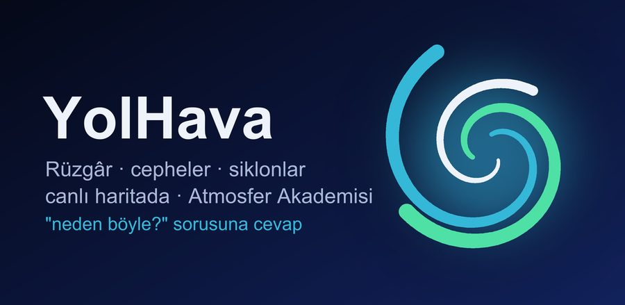

YolHava
Web'de canlı Play Store'da değil
Normal hava durumu uygulamaları tek bir noktayı gösterir. Ama yola çıkan biri için doğru soru bu değil.
YolHava rotanızı ve kalkış saatinizi alıp o noktadan geçeceğiniz anda karşılaşacağınız havayı hesaplıyor — "14:20 civarında Bolu'da kuvvetli yağmura girersin" gibi.
Web sürümü canlı ve 7 dilde; içinde 52 adım adım ispat, 19 etkileşimli simülasyon ve 356 terimlik bir ansiklopedi var. Android paketi hazır ama mağazaya çıkaramadım; sebebini sayfasında açıkça yazdım.
- TypeScript
- React
- MapLibre GL
- Canvas / WebGL
- Open-Meteo API
- Capacitor (Android)
- Cloudflare Workers
Nasıl yaptım
Veri. Hava tahminini Open-Meteo'nun açık API'sinden çekiyorum. İşin püf noktası şu: rotayı tek nokta olarak değil, üzerindeki onlarca noktayı ayrı ayrı sorguluyorum ve her nokta için oraya varacağın saatin tahminini alıyorum. Zaman ile mesafeyi eşleştiren kısım işin kendi yazdığım çekirdeği.
Harita. MapLibre GL kullandım — Mapbox'ın açık kaynak çatalı. Ücretli bir harita servisine para veremeyeceğim için bilinçli bir tercihti; vektör karolarla telefonda da akıcı çalışıyor.
Arayüz. TypeScript + React, Vite ile derleniyor. TypeScript'i özellikle seçtim: meteoroloji hesabında birimi karıştırmak (hPa mı kPa mı, °C mi K mi) en kolay hata ve tip sistemi bunu derleme anında yakalıyor.
Android. Capacitor ile aynı koddan APK çıkıyor. Ayrı bir mobil uygulama yazmak yerine tek kod tabanını kullanmayı seçtim; tek kişiyim, iki ayrı uygulamayı güncel tutamazdım.
Yayın. Cloudflare Workers + Pages üzerinde duruyor, GitHub Pages'te de aynası var. Aynayı şunun için yaptım: bazı Türk operatörlerinde pages.dev adresleri açılmıyor, github.io açılıyor.
Yapay zekâ. Kod yazarken kullandım, saklamıyorum — özellikle React tarafında ve hata ayıklarken hızlandırdı. Ama rota boyunca zaman-mekân kesiti alma fikri, hangi meteorolojik değişkenin sürücü için anlamlı olduğu ve eşik değerleri bana ait. Meteorolojiyi bilmeden bu uygulamanın ne yapması gerektiğini tarif edemezdim.